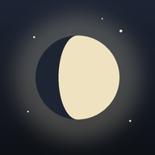

直近7日間
年度・月・日ごとに、集中の記録を振り返れます
FUSEは、スマホを伏せている時間だけを計測する集中タイマーです。手に取った回数と理由、何をしたかを記録して、自分の集中の傾向を知ることができます。 データはこの端末の中にだけ保存され、外部には送信されません。計測中は画面が消えないように設定します。タイマーとアラームは、FUSEを開いている間だけ動作します。画面を消したり、ほかのアプリを開いたりすると計測は止まります。
スマホを伏せている時間だけを計測します。手に取った回数も、何をしたかも記録に残ります。
画面を下にして机に置くだけ。手に持ったままでは始まりません。
手に取った回数と理由を記録します。もう一度伏せれば、続きから再開します。
1日の目標に届くと満月に。何をしたかは日記で振り返れます。